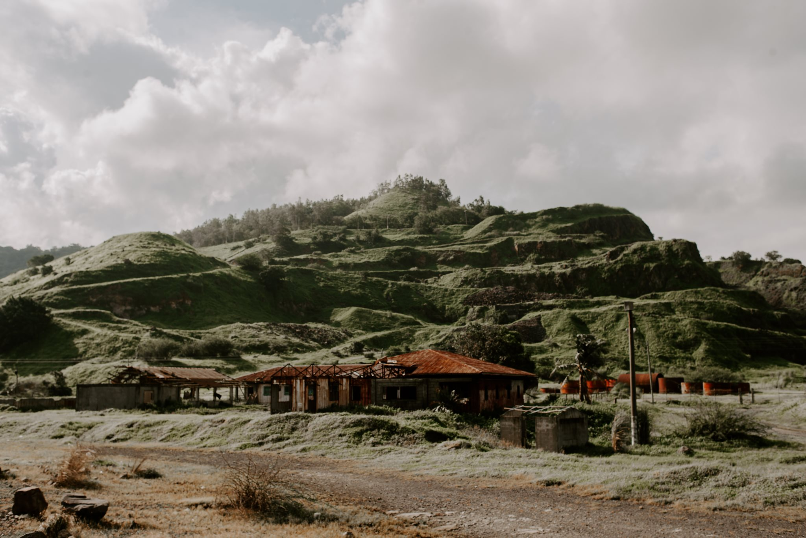

Powerplant seen from the Sisiman Beach.

Old school buildings at Barangay Alas-asin.
Just 23 miles away from my hometown, at the southernmost tip of the province of Bataan, lies the scenic town of Mariveles. Known for its natural beauty, Mariveles is also home to world-class factories that produce bags, shoes, and even ITF-approved tennis balls. Beyond its industrial achievements, the town offers some of the most breathtaking views in the province. Below are a few of my favorite spots that showcase the charm and beauty of Mariveles.